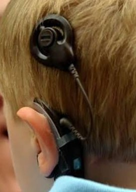
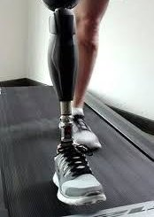
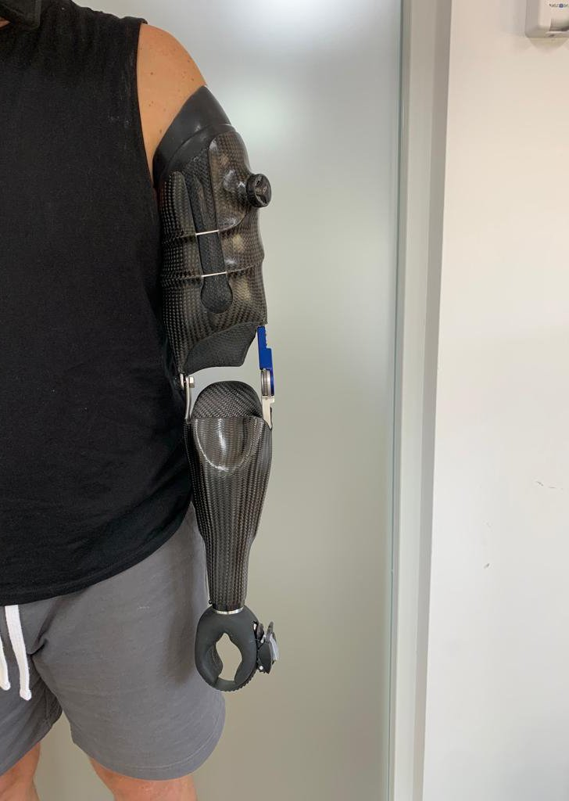

Implante Coclear
Jóvenes
- Incluye:
- Tipos de implantes
- Componentes
- Funcionamiento
Pequeña introducción sobre el sitio web que desarrollaré en el Servicio Social.
Ofrecemos infografías para adultos y para los más pequeños de la casa.



Este proyecto quiere acercar los diferentes implantes y prótesis hacia las juventudes.
Visita la página oficial de la Escuela Nacional de Estudios Superiores Juriquilla en el siguiente link: